MySQL
MySQL mette a disposizione diversi tipi di tabelle storage engine per la memorizzazione dei dati, ognuno
presenta delle caratteristiche differenti. Esiste un API che si può utilizzare per creare nuovi storage engine. Quelli principali
che MySQL mette a disposizione di default sono:
-
Transazionali sono più sicuri, permettono di recuperare i dati in caso di crash e supportano le transazione atomiche (ACID)
-
Non transazionali sono più veloci, occupano meno spazio su disco e minor richiesta di memoria
Lo storage engine di default è InnoDB che è di tipo transazionale e che tra le novità più interessanti rispetto al precedente engine di MySQL (MyIsam) porta:
-
lock a livello di record per gestire la concorrenza
-
foreign key
Le tabelle InnoDB sono soggette alle seguenti limitazioni:
-
Non è possibile creare più di 1000 colonne per tabella
-
Su alcuni sistemi le dimensioni del table space non possono superare i 2GB.
-
La grandezza minima di un tablespace è di 10MB.
-
Le SELECT COUNT(*) su tabelle molto grandi possonon essere molto lente.
Tipi di dati in MySQL
Tipi numerici
Tutti i tipi numerici permettono di rappresentare valori sia con il segno che senza, per specificare al DBMS
una delle due modalità dobbiamo usare la parola chiave UNSIGNED tipo_numerico ad esempio per
rappresentare valori senza il segno
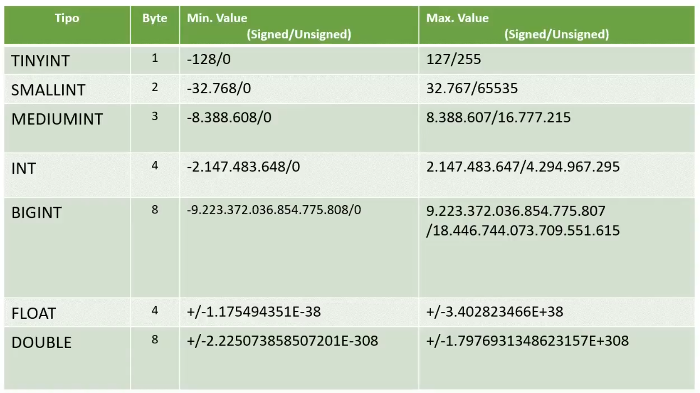
è possibile riferirsi ai tipi numerici usando degli alias che ne aiutano la memorizzazione:

Tipi date
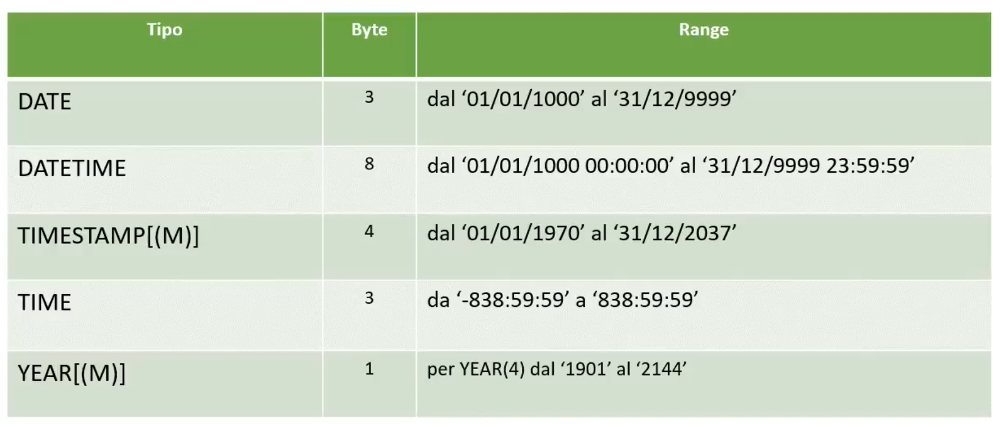
Tipi testo
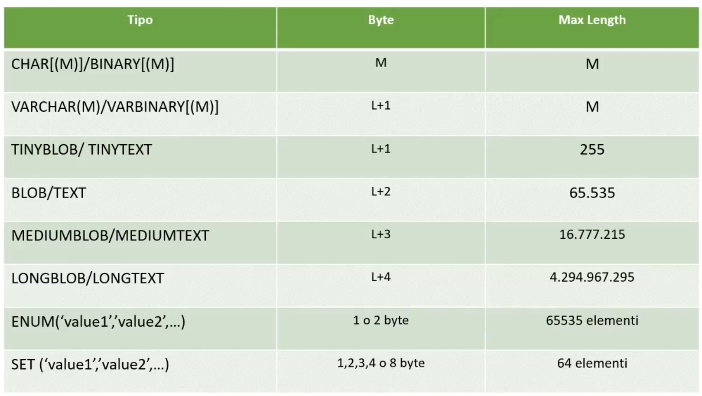
Tra di questi tipi, i BLOB servono a memorizzare file. Nella colonna corrispondente Max Length, se prendiamo in considerazione ad esempio il LONGBLOB,
la Max Length ci restituisce la massima dimensione memorizzabile per file che è quindi 4gb, la stessa colonna Max Lenght se prendiamo in considerazione
il tipo TEXT, allora verrà restituita il massimo numero di caratteri memorizzabili.
Il tipo ENUM ci permette di definire valori standard per limitare la scelta da parte dell'utente che sarà obbligato a scegliere un valore tra quelli specificati nell'ENUM.
Ad esempio possiamo definire un ENUM Sesso('Maschio','Femmina') e quindi per l'attributo Sesso l'utente potrà inserire nel database o Maschio o Femmina.
Il tipo SET ci permette di memorizzare invece una "lista di valori", ad esempio SharedPreferences('true','red',...).
Tipi NULL
Il valore NULL per un campo assume significato "valore mancante". In MySQL non è possibile testare valori NULL
con i consueti operatori di confronto, due sono gli operatori che possiamo usare per testare valori nullable e cioè:
Quando si usa ORDER BY, allora i valori NULL:
Sono inseriti all'inizio se specifichiamo ASC
Sono inseriti alla fine se specifichiamo DESC
Nell'esempio che segue vediamo il primo codice tagliato in quanto errato, infatti stiamo usando un operatore di confronto =
per fare un test sul valore NULL per il campo return_date.

Gestione degli accessi MySQL Client
Da linea di comando possiamo dare una serie di comandi, per interagire con un database, i comandi principali che possiamo impartire al client MySql:
-
Per connettersi ad un database usiamo il comando:
mysql -h host -u user -p
Enter password: ********
-
Per creare un utente possiamo dare il comando:
CREATE USER'user'@'host' IDENTIFIED BY 'nome_password';
-
Con 'user'@'host' indichiamo il nome dell'account da creare e su quale host risiede.
-
Con IDENTIFIED BY 'nome_password' andiamo invece a creare una password per l'utente prima specificato.
-
Per mostrare informazioni riguardo il database, possiamo usare il comando SHOW che ha diverse possibilità:
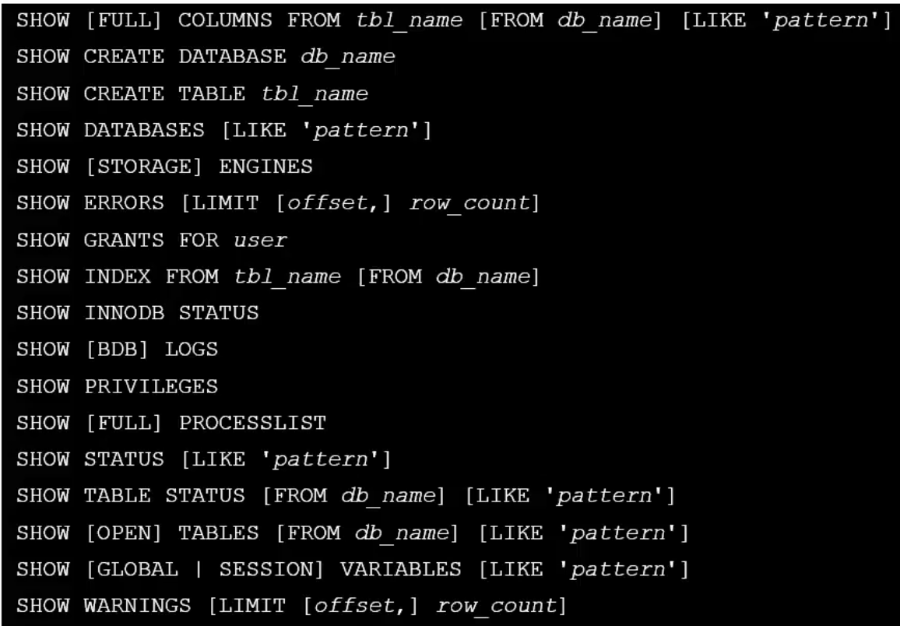
-
Con la stessa sintassi dello standard SQL possiamo assegnare privilegi ad un utente:
GRANT privilege,... ON 'db'.'table' FROM 'user'@'host'
Dove privilege può assumere valori:
-
ALL PRIVILEGES
-
USAGE
-
SELECT,INSERT,UPDATE,DELETE
-
CREATE,ALTER,INDEX,DROP,CREATE,VIEW,TRIGGER
-
Per rimuovere un utente
DROP USER 'user'@'host'
-
Per revocare i privilegi di un tente:
REVOKE privilege,... ON 'db'.'table' FROM 'user'@'host'
Dove privilege può assumere valori:
-
ALL PRIVILEGES
-
USAGE
-
SELECT,INSERT,UPDATE,DELETE
-
CREATE,ALTER,INDEX,DROP,CREATE,VIEW,TRIGGER
-
Mostrare il nome dell'utente corrente
SELECT user();
Query principali
INSERT
Supponiamo di stare inserendo un record tramite la chiave primaria (importante). Il nuovo record da inserire ha la stessa
chiave primaria di un record già presenta. Vogliamo quindi fare in modo di non voler introdurre un duplicato
e di voler aggioranre il record già presente aggiornandolo con le informazioni del nuovo, allora:
INSERT INTO table (field1,...,fieldN) VALUES (value1,...,valueN) [ON
DUPLICATE KEY UPDATE
field1=value1,
...
fieldN=valueN]
SELECT
La SELECT in MySql è molto simile allo standard SQL a cui aggiunge qualche keyword in più per definire dei comportamenti avanzati. Di seguito
la sintassi completa della SELECT.
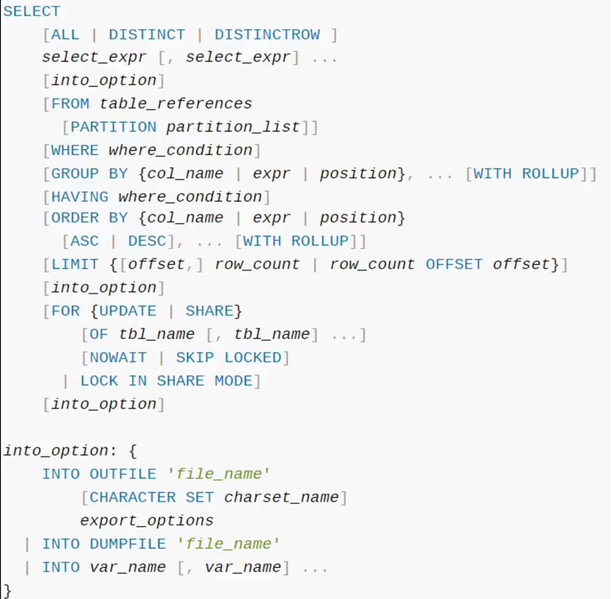
Tra i comandi nuovi non presenti nel SQL classico e che torneranno utili:
-
LIMIT
-
OFFSET
-
FOR che serve ad implementare la funzionalità di lock per gestire la concorrenza.
Inoltre in caso di SELECT annidate bisogna sempre indicare un alias, altrimenti ci verrà restituito un errore.
Espressioni regolari
Come funzionalità aggiuntiva rispetto al tradizionale metodo LIKE di SQL, abbiamo quello dell'utilizzo di espressioni regolari per le stringhe, cui sintassi la possiamo
vedere di seguito:
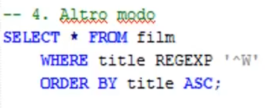
UPDATE
Le query di tipo Update seguono la sintassi standard di SQL con due piccole aggiunte opzionali:
-
LIMIT per limitare il numero di righe da modificare
-
LOW PRIORIY per indicare al DBMS di eseguire quella modifica solo in condizioni consone, cioè quando il server è inoccupato
DELETE
Come per l'UPDATE, anche per il DELETE abbiamo una sintassi standard, con la possibilità di poter indicare un LIMIT per limitare il numero di righe da poter eliminare per volta
Funzioni
In MySql abbiamo due tipi di funzione:
-
Multiple Row, si tratta di un nuovo tipo di funzione che prende in input un set di righe e restituisce un valore.
-
Single Row, classiche funzioni che prendono in input un valore e ne restituiscono un in output
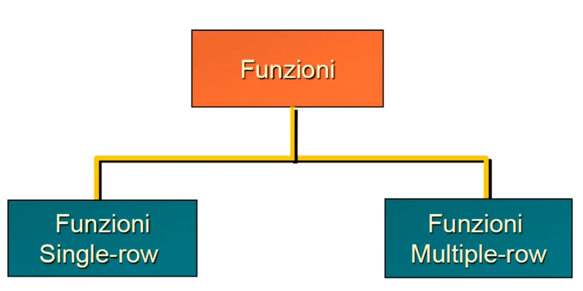
Di funzioni multiple row ne abbiamo conosciuti diverse, SUM(...) ad esempio è una di queste.
Durante il corso vederemo principalmente funzioni single row, cui tipologie venngono sintetizzate
nel seguente schema:
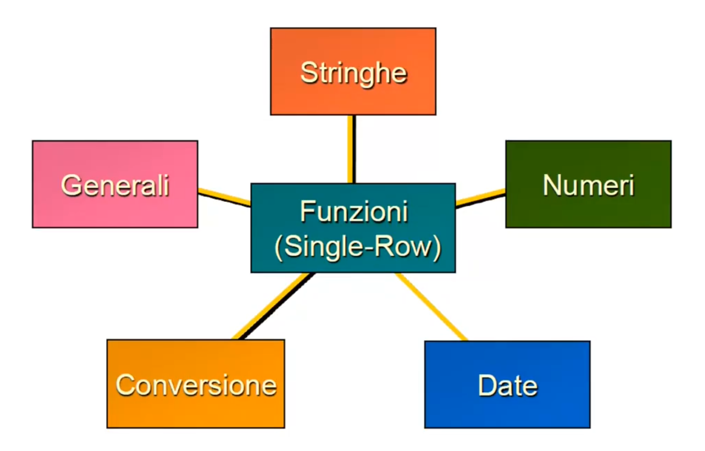
Operatori
Gli operatori SQL vengono conservati in MySql e ne vengono aggiunti alcuni come quelli matematici, l'operatore aritmentico %, l'operatore logico XOR.
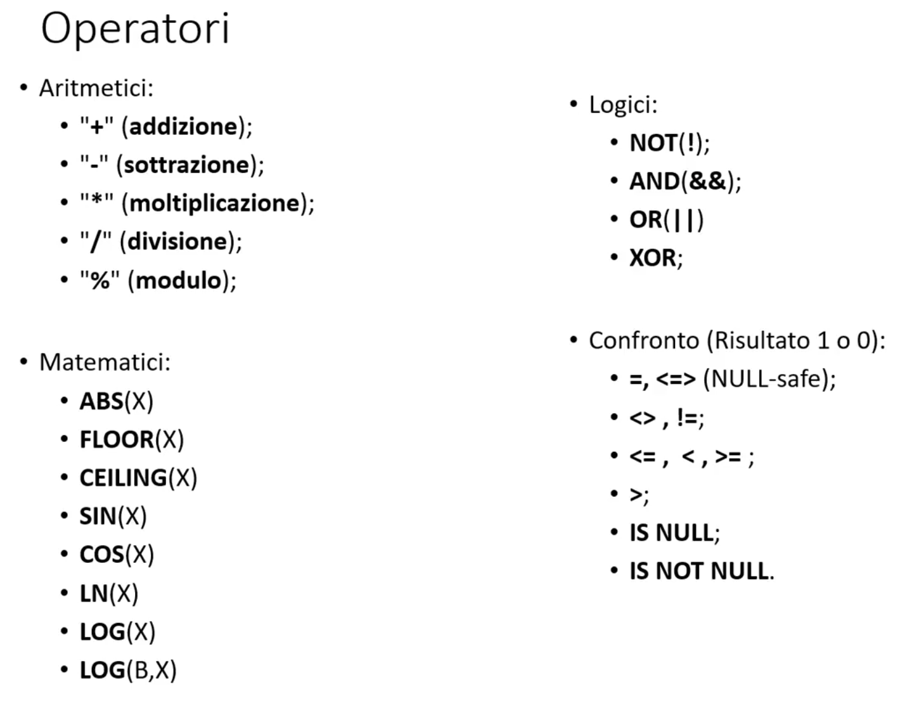
Non esistendo tipi bool, in MySql il risultato di un confronto tramite operatori di confronto restituisce:
-
1 se il risultato del confronto è true
-
0 ser il risultato del confronto è false
Tra gli operatori introdotti da MySql abbiamo lo spaceship operator <=>, questo:
-
Si comporta come un operatore = se gli argomenti del confronto non sono NULL
-
Restituisce false se andiamo a confrontare un valore qualunque con NULL
-
Restituisce true se andiamo a confrontare NULL con NULL
Questo operatore è quindi classificato come NULL SAFE, cioè come risultato di un confronto non verrà mai restituito NULL.
Con l'operatore = se uno dei due valori è NULL, restituisce invece NULL.
Altri operatori che fanno controlli su insiemi di valori o range abbiamo:
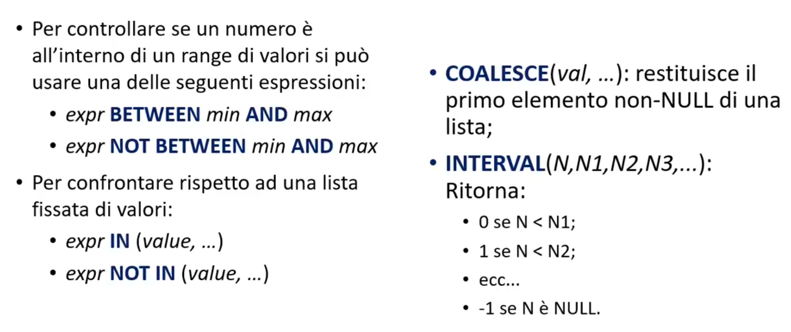
Tra questi operatori solo INTERVAL viene introdotto da MySql rispetto allo standard SQL.
Questo operatore potrebbe ad esempio tornare utile per discretizzare certi valori mappandoli in base a dei range.
Controllo del flusso
Come per l'SQL abbiamo vari costrutti condizionali che ci permettono di avere controllo sul flusso di operazioni.
IF(expr1,expr2,expr3)
If in SQL è una funzione che restituisce expr2 se expr1 è vera, altrimenti restituisce expr3.
Come per l'SQL, restituisce null se i due valori passati come argomenti sono uguali; altrimenti, restituisce il primo valore
NULLIF(expr1,expr2)
restituisce expr2 se expr1 è nullo
IFNULL(expr1,expr2)
CASE (C-like)
CASE value
WHEN compare_value THEN result
[WHEN compare_value THEN result]
[ELSE result]
END
CASE (Seconda versione)
CASE
WHEN condition THEN result
[WHEN condition THEN result]
[ELSE result]
END
In questa seconda versione non andiamo a specificare nessun value e potrebbe sostituire la possibilità
di altri linguaggi di fare vari if del tipo:
if(foo.a == 'ciao'){
return 'mondo';
}
if(foo.a == 'mario'){
return 'rossi';
}
...
Funzioni su stringhe
Tra le principali funzioni per la manipolazione di stringhe abbiamo:
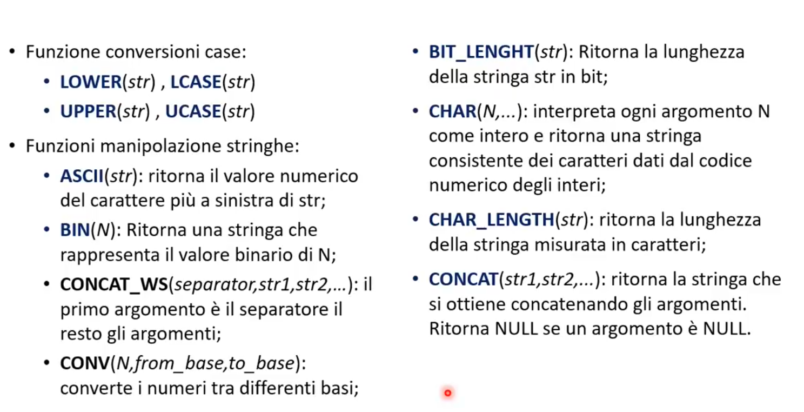
Specificando meglio il comportamento di alcuni di questi operatori:
-
CONV(N,from_base,to_base) che prende in input un numero e lo converte alla base finale.
CONV(10,10,16)
Converte il numero 10 da decimale a esadecimale, ritornando quindi 'A'
-
BIT_LENGTH(str) la lunghezza in bit che ritorna la funzione è ovviamente strettamente legata alla codifica
di caratteri che usiamo. Ad esempio se usiamo una codifica a 8bit, allora BIT_LENGTH(str) restituirà il risultato del prodotto(8*numero_caratteri_str)
Altre interessanti funzioni sono:
-
LENGTH(str) che ritorna la lunghezza della stringa in bytes
-
LOCATE(substr,str) ritorna la posizione della prima occorrenza della sottostringa nella stringa
-
LTRIM(str) ritorna str con gli spazi iniziali rimossi
-
REPEAT(str,count) restituisce una stringa ripetendo count-volte str
-
REPLEACE(str,from,to)
-
STRCMP(exp1,expr2) Ritorna 0 se le due stringhe sono uguali,-1 se il primo argomento è più piccolo del secondo, 1 altrimenti.
Ricerca Full-Text
Dato un campo di tipo TEXT la possibilità di eseguire ricerche complesse.
MATCH(col1,col2,...) AGAINST (expr[search_modifier])
Viene cioè fatta una ricerca all'interno delle colonne che sono state passate, del search_modifier che indicato.
Possiamo usare la funzione MATCH...AGAINST:
-
Come condizione della where:
SELECTE film_id FROM Library WHERE MATCH(category) AGAINST ('azione');
In questo caso viene restituito o true o false in base se è stata trovata qualocosa.
-
Nella tartet list oppure come tabella FROM:
SELECT film_id,MATCH(category) AGAINST ('azione') AS score
In questo caso viene restituito un valore numerico. Più alto è e più è probabile che quello che cerchiamo è stato trovato.
Stored Procedure
Le Stored Procedure sono dei programmi, memorizzati nei database e invocati su esplicita richiesta da parte degli utenti.
Ogni DBMS ha un proprio linguaggio per creare Stored Procedure, per quanto riguarda MySql abbiamo il MySql Stored Procedure.
I linguaggi usati dai DBMS per creare Stored Procedure sono da considerarsi come un'estensione dell'SQL che per aggiungere allo standard costruttu come:
BEGIN,END,DECLARE,FOR,WHILE,LOOP,IF,etc
Le stored procedure possono essere scritte si nel linguaggio fornito con il dbms, ma anche, per molti database, con linguaggi esterni (come C/C++).
è utile suddividere le stored procedure in due gruppi:
-
Procedure accetta parametri in input ma non restituisce parametri in output (void).L'unico modo per farlo è attravero una variabile di output passata in input per riferimento
-
Funzioni (UDF) accettano valori in input e restituiscono in output valori
Le SP sono riusabili da qualunque applicativo che può accedere al database. Il grosso vantaggio delle SP è il livello di astrazione con il quale il mio applicativo va a lavorare.
L'applicativo si limita quindi a chiamare le SP non conoscendo i dettagli implemetativi del db.
Un altro vantaggio è a livello prestazionale, infatti:
-
In un normale applicativo, vengono fatte richieste di query (anche più di una) per funzione implementata
-
Vengono limitate il numero di chiamate perchè vengono chiamate SP dove i comportamenti sono incapsulati
Nel caso specifico, MySql non supporta la scrittura di Stored Procedure con un linguaggi esterni.
-
Definizione di una procedura
CREATE
[DEFINER = {user | CURRENT_USER}]
PROCEDURE nome_procedura ([..parametri..])
[caratteristiche...] corpo_della_routine
-
Definizione di UDF
CREATE
[DEFINER = {user | CURRENT_USER}]
FUNCTION nome_procedura ([..parametri..])
RETURN type
[caratteristiche...] corpo_della_routine
I parametri possono essere di tipo:
-
IN (default) rappresenta una variabile che se passata ad una funzione non può subire modifiche in quanto viene passata per copia di valore
-
OUT rappresenta una variabile che può subire variazioni in quanto viene passato il riferimento
-
INOUT è una combinazione delle precedenti
Esempio di dichiarazione di una procedura
CREATE PROCEDURE nome_procedura (parametro INT)
BEGIN
blocco istruzioni...
esistendo
Durante la creazione di procedure con blocchi di istruzioni multiple si verifica un problema. Vediamo un esempio.
1. CREATE PROCEDURE nome_procedura (parametro INT)
2. BEGIN
3. Istruzione1;
4. Istruzione2;
5. esistendo
In MySql il ; serve a dire che è finita un'istruzione, ma serve all'interno delle SP per delineare la fine di un'istruzione nel blocco di istruzioni. Quello che accade
tra l'istruzione1 e l'istruzione2 è un conflitto di SQL in quanto il ; viene interpretato come la fine della dichiarazione della procedura. Per evitare questo,
soprattutto se creaiamo procedure da terminale dobbiamo:
mysql> delimiter //
mysql> CREATE PROCEDURE nome_procedura (p1 INT)
-> BEGIN
-> Istruzione1;
-> Istruzione2;
-> END
-> //
mysql>delimiter ;
In pratica con la prima istruzione diciamo di vedere // come la fine di un'istruzione SQL in modo da poter usare ;
come delimitatore tra istruzioni nel corpo della procedura. Possiamo poi ripristinare il consueto funzionamento di MySql con delimiter ;
Variabili nelle procedure
Dichiarazione di variabili
DECLARE pippo INT DEFAULT 0;
Assegnare valore alla variabili (consigliato)
DECLARE pippo INT DEFAULT 0;
SET pippo = 10;
Assegnare valore alla variabili da SELECT (sconsigliato)
DECLARE pippo INT DEFAULT 0;
SELECT COUNT(*) INTO pippo FROM Table;
Scope delle variabili
Ogni variabile ha il proprio scope (visibilità). Lo scope di una variabile è definito tra le istruzioni di BEGIN ed END. Possiamo anche
dichiarare variabili globali (tipo static) facendole precedere dal simbolo @. Inoltre la dichiarazione delle variabili viene sempre fatta prima dell'istruzione BEGIN.
1 DECLARE x INT (3);
2 BEGIN
3 DEClARE
4 y INT;
5 BEGIN
6 ...
7 END;
8 END;
9 END;
La variabile x è visibile tra l'istruzione 2 e 9.
La variabile y è visibile tra l'istruzione 5 e 7.
Chiamare una procedura
Chiamare una procedura che non accetta parametri
CALL nome_procedura;
Chiamare una procedura passando parametri
CALL nome_procedura(12);
Controlli del flusso nelle procedure
MySql Stored Procedure consente due dichiarazioni condizionali:
-
IF
IF espression THEN commands
[ELSEIF expression THEN commands]
[ELSE commands]
END IF;
-
CASE
CASE
WHEN expression THEN commands
...
WHEN expression THEN commands
ELSE commands
END CASE;
Questi controlli del flusso hanno una sintassi molto simile rispetto il classico MySql.
Loop
Le stored procedure di MySQL consentono la definzione di loop per consentire di processare comandi iterativamente. I cicli consentiti sono:
-
WHILE...DO...ELSE...
WHILE espressione DO
Istruzione
END WHILE
Ripeti Istruzione fino a quando espressione non diventa falsa.
Esempio
DELIMITER //
CREATE PROCEDURE WhileExample
BEGIN
DECLARE x INT DEFAULT 1;
DECLARE str TEXT;
WHILE x < 5 DO
SET str = CONCAT(str,x,',');
SET x = 5;
END WHILE;
SELECT str;
END//
-
REPEAT...UNTIL...
è un ciclo che inizialmente esegue l'istruzione e poi ripete l'istruzione fino a quando l'espressione è vera.
REPEAT
Istruzione;
UNTIL espressione
END REPEAT
Esempio
DELIMITER //
CREATE PROCEDURE WhileExample
BEGIN
DECLARE x INT DEFAULT 1;
DECLARE str TEXT;
REPEAT
SET str = CONCAT(str,x,',');
SET x = 5;
UNTIL x < 5;
END REPEAT;
SELECT str;
END//
Cursori
Un cursore è un iteratore su di un risultato della query. Un cursore ha le seguenti proprietà:
-
Read only : se prendiamo il risultato di una query e lo mettiamo in un cursore, quel risultato non potrà essere modificato fino a quando non chiudiamo il cursore.
-
Non-scrollable: il risultati possono essere letti in maniera sequenziale, dal primo all'ultimo
-
Asensite: le tabelle sulla quale sono stati aperti i cursori non possono essere modificate quando i cursori sono attivi.
Dichiariamo un cursore come una variabile qualunque:
DECLARE cursor_name CURSOR FOR SELECT_statement
La SELECT_statement ci restituisce la lista di valori sulla quale chiamare il cursor.
Dopo la dichiarazione di un cursore, esso va aperto prima di leggerne le righe.
OPEN cursor_name;
Successivamente recuperiamo le righe:
FETCH cursor_name INTO variable_list;
Per chiudere il cursore e rilasciare la memoria occupata, usare il comando:
CLOSE cursor_name;
Vediamo un esempio:
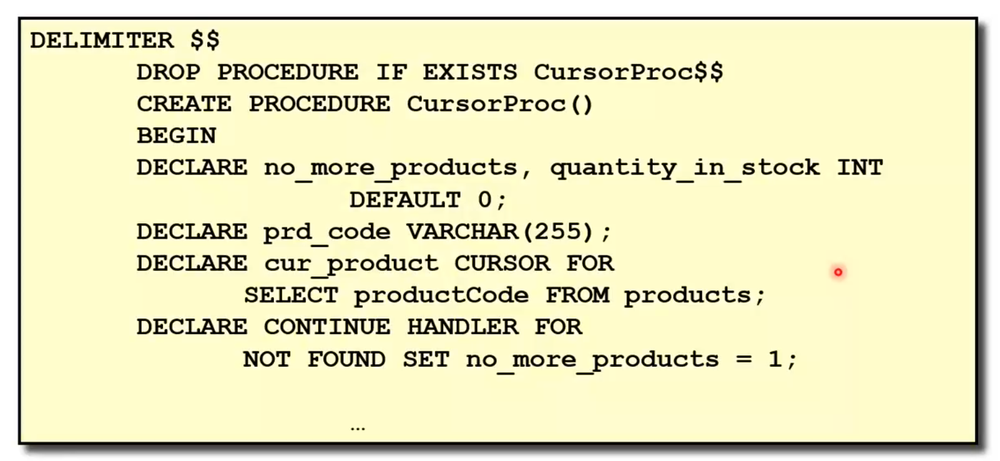
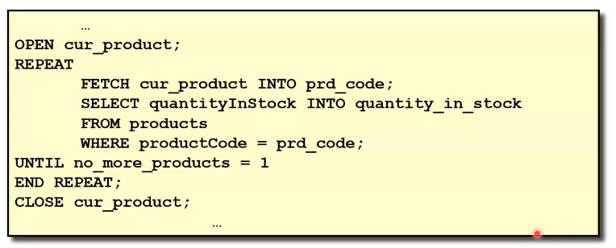
-
Andiamo a dichiarare il cursore cur_product sui risultati della query
SELECT productCode FROM products
-
Dichiaro il CONTINUE HANDLER
DECLARE CONTINUE HANDLER FOR NOT FOUND SET no_more_products = 1; questo handler viene dichiarato per segnalare la fine della fase di fetch.
In altre parole quando non ci saranno più elementi da prendere dal cursore la variabile no_mode_products verrà settata a 1.
-
Apro il cursore
-
Dichiaro quindi una REPEAT che si blocca quando no_more_products = 1. All'interno della REPEAT, recupero i dati con FETCH;
-
Chiudo il cursore
Importare dati nel database
mysql > LOAD DATA INFILE 'orders.txt' //Nome del file dal quale fare l'import
INTO TABLE Orders; //Nome della tabella dove inserire i file importati
FIELD TERMINATED BY '\t' ; //Carattere di split nella stessa riga
LIKES TERMINATED BY '\r\n'; //Carattere di terminazione tra un dato e l'altro
In questo caso, quello che fa MySql è analizzare il file di testo, splittare sulla riga i dati quando trova il Carattere
'\t' e passare alla riga successiva quando trova '\r\n'.
Quella appena trattata è la sintassi più generica del comando di import, in realtà quella completa la vediamo di seguito.
1 LOAD DATA [LOW_PRIORITY | CONCURRENT] [LOCAL] INFILE 'file_name.txt'
2 [REPLACE | IGNORE]
3 INTO TABLE tbl_name
4 [FIELDS
5 [TERMINATED BY 't']
6 [[OPTIONALLY] ENCLOSED BY '']
7 [ESCAPED BY '\\']
8 ]
9 [LINES
10 [STARTING BY ''
11 [TERMINATED BY '\n']
12 ]
13 [IGNORE number LINES]
14 [(col_name,...)]
Vediamo riga per riga:
-
Nella riga 1 con
[LOW_PRIORITY | CONCURRENT] andiamo a specificare la priorità con il quale l'azione di import
-
Sempre nella riga 1 con
[LOCAL] andiamo ad indicare che il file si trova in locale rispetto la macchina che sta facendo la richiesta
e non nello stesso filepath del database
-
Nella riga 2 possiamo indicare opzionalmente
[REPLACE | IGNORE]. Con la prima voce andiamo ad indicare la volotà di sostituire il record presente
nel database con quello letto da file se hanno la stessa chiave primaria. Con la seconda voce invece non andremo ad importare la tupla se presenta la stessa chiave primaria di un altro record già presente.
-
Dalla riga 9 alla riga 12, indichiamo che MySql deve importare tutte quelle linee che iniziano per il carattere '' e finire con '\n'
-
Nella riga 13 possiamo indicare un OFFSET per la lettura da file, ad esempio se indichiamo
IGNORE 5 LINES MySql
comincerà la lettura a partire dalla quinta linea del file.
-
Nella riga 14 la possibilità di indicare le colonne da riempire, quelle che non indichiamo verranno riempite con NULL
Se ad esempio diamo una query del genere:
LOAD DATA INFILE 'test.txt' INTO TABLE test LINES STARTING BY 'yyy';
E abbiamo un file contenente:
yyy"Row",1
blblba yyy"Row",2
Allora all'interno del database verrà caricato come:
("row",1)
("row",2)
In altre parole verrà ignorato quello che si trova prima rispetto la stringa "yyy". Per cui "blablabla" verrà ignorato.
Quindi ad esempio potrebbe essere un buon modo per pulire file di testo "sporchi" con sequenze di testo
che non danno alcuna informazione.